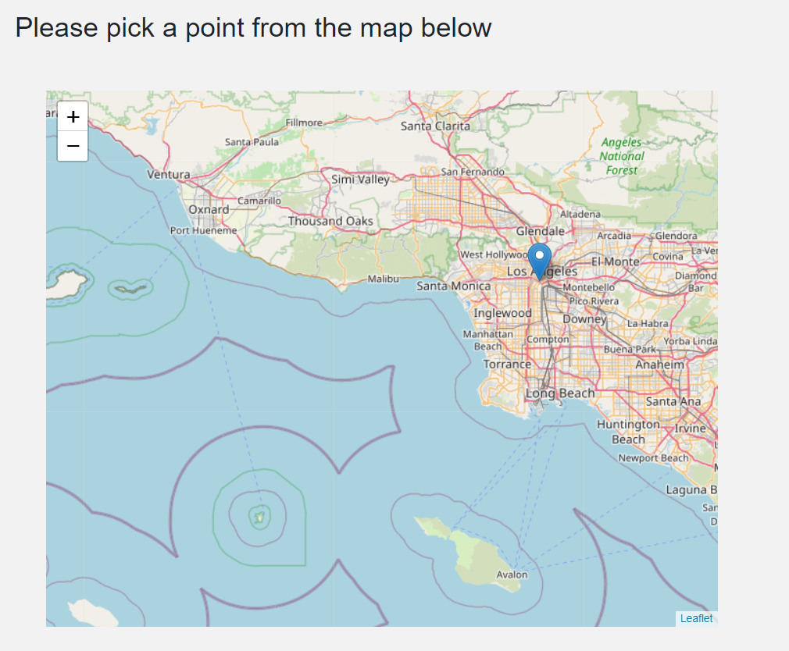

Geo Location Based Prediction¶
If you are a user and you want to build a warehouse County based prediction is good place to get some insight into how risky/safe it is to build the warehouse in a particular county. Now, suppose we have a narrowed list of county’s and want to look at specific locations in the county then this tool is ideal. This model generates a probability for an incident, based on the user desired lon/lat and time, so you can look at a very specific location and access the risk.
How to use¶
The interaction with user aided with prompts is very self-explanatory and intuitive. User selects a month for query, the on the map clicks on the specific location coordinates to see the risk percentage for that place. For example, suppose we choose the Query Month = June and pick a point near Los Angeles we see Risk Percentage = 63.1%

Dashboard elements and the functions involved¶
There is only 1 dashboard element involved - 1. California state map and Risk percentage
1. California state map and Risk percentage¶
Before, we look at how we predict risk percentage let us look at the interactive california state map through which we get the input. We can zoom in, zoom out, drag to different locations in California on this dashboard element. Once we click on a particular location we see a blue head to get visual confirmation of the selected location. Note - When we hover over the head, we can actually see the exact location coordinates.
For our example, we choose a location near Los Angeles like this -
{kind=link}
1.1 Map Click¶
This acts as an input to capture the coordinates which is then fed to the backend function pred_func_geo() to get predicted risk percentage.
1.2 Predict function Geo location¶
This function essentially uses geo_model() to make the actual prediction. We talk more about this later.
1.3. Risk Percentage¶
This geo_model is uses training , extra weather data , interacts with other modules. More about this can be found here.